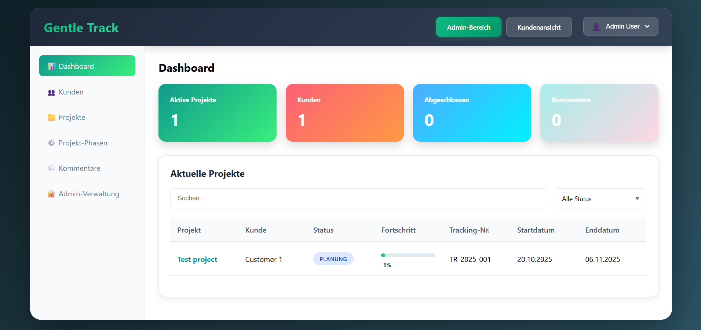

Gentle Track is a modern web-based project management system designed to streamline project tracking, customer management, and team collaboration. This full-stack application provides intuitive interfaces for managing projects from planning through completion, with real-time progress tracking and comprehensive reporting capabilities.

Key Features:
- Project Management: Complete project lifecycle management with status tracking (Planning, In Progress, Completed) and progress monitoring.
- Customer Management: Centralized customer database with project associations and communication history.
- Real-time Dashboard: Interactive dashboard displaying active projects, customer count, completed projects, and comment statistics.
- Project Phases: Structured phase management to track project milestones and deliverables throughout the project lifecycle.
- Tracking Numbers: Automatic generation of unique tracking numbers (TR-YYYY-XXX format) for easy project identification and reference.
- Commenting System: Built-in commenting functionality for team collaboration and project documentation.
- Admin & Customer Views: Dual interface modes - full admin access for management and restricted customer view for client access.
- Advanced Filtering: Quick search and status filtering capabilities to find projects efficiently.
Technical Specifications:
- Backend: Built with ASP.NET Core providing a robust RESTful API architecture for secure and scalable data operations.
- Frontend: Developed using React with Vite for fast, modern, and responsive user interfaces.
- Database: Integrated with MS SQL Server for reliable and efficient data storage and retrieval.
- Responsive Design: Fully responsive layout optimized for desktop, tablet, and mobile devices.
- Security: Role-based access control with separate admin and customer authentication levels.
- Real-time Updates: Live data synchronization ensuring all users see the most current project information.
- Multi-language Support: Interface available in multiple languages (German interface shown in screenshot).
- Reporting: Comprehensive reporting on project progress, customer statistics, and team performance metrics.
How It Works:
- Administrators create customer profiles and assign projects with specific tracking numbers and timelines.
- Projects are tracked with start and end dates, progress percentages, and status updates throughout their lifecycle.
- Project phases can be defined and managed to break down complex projects into manageable stages.
- Team members and customers can add comments and updates, maintaining a comprehensive project history.
- Customers access their projects through a dedicated customer view, seeing only their assigned projects and relevant information.
- Dashboard metrics provide instant visibility into active workload, completion rates, and customer engagement.